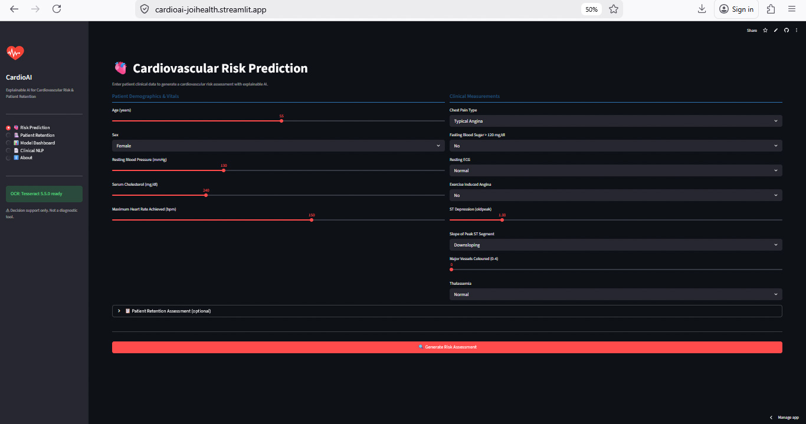
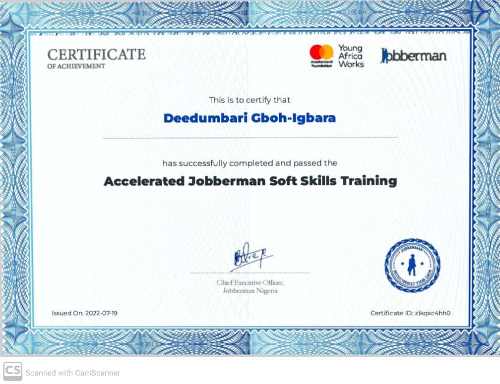

Patients and EMR
Registration, write-once vitals, diagnoses, allergies, immunizations, medications and patient history.
Data Science · AI Engineering · Product Building
I build data-driven products that make information more useful, decisions more explainable and services more resilient—from clinical software to environmental monitoring.
Gboh-Igbara D. Charles · Data Scientist and AI Engineer · Built at JoiHealth Polyclinics
Data analysis · machine learning · digital health
About me
I am Gboh-Igbara D. Charles, a Data Scientist and AI Engineer with experience across data analysis, business intelligence, digital transformation, energy-sector work and machine learning. I turn complex information into practical tools and clear insights for people and organisations.
My work brings together analytical thinking, software delivery and responsible AI. I care about how products behave in real settings: whether their outputs can be understood, whether their limitations are clear, and whether the service can keep working when conditions are less than ideal.
Current flagship project · Healthcare technology
Production systemBuilt end to end for a two-branch polyclinic in Lagos and Port Harcourt, JoiHealth HMS goes beyond record keeping. It combines everyday clinical and operational workflows with rules-based safety checks, explain-only AI, accountable records and a hosting setup designed to withstand provider failure.
One system · connected workflows
A shared clinical core supports fourteen staff roles, each with access rules and a role-specific landing page.
Registration, write-once vitals, diagnoses, allergies, immunizations, medications and patient history.
Rich-text plans, immutable clinician notes, and ICD, ICF, CPT and HCPCS codes.
Invoices, line items, payments, overpayment blocking and PDF export.
Orders, result files, X-ray and MRI analysis with clinician review and sign-off.
Pre-session screening, target zones, prescriptions, programme outcomes and consent records.
Quick-entry risk assessment for the cardiology team.
Formulary, drug-safety checks, batch and expiry stock, dispensing, returns and controlled-drugs register.
Diet and nutrition, physiotherapy, psychology and occupational therapy.
Appointments, referrals, inventory, requisitions and clinical meeting minutes.
Role-specific dashboards and weekly progress reports.
Downloadable record PDFs use the clinic letterhead and a shared footer.
Admin, sub-admin, doctor, clinician, nurse, cardiologist, clinical psychologist, occupational therapist, pharmacist, pharmacy technician, records officer, accountant, procurement and general manager.
Designed for human oversight
Screening flags, target heart-rate zones and drug-safety checks come from deterministic code and data tables, not a language model.
The AI summarises and explains. An explicit clinician action is required before a draft can be saved.
Each saved result records the engine version and the flags that fired.
Consent history governs AI-assisted care and model-development use, including honoring withdrawal.
Clinical thresholds are explicit settings rather than buried constants, and are awaiting clinical sign-off.
Per-clinician rate limits and token caps help control cost and limit abuse.
A separate imaging service uses an ONNX chest CNN to score 18 findings. A gate refuses images that are not chest X-rays; Grad-CAM heatmaps are drawn only for findings actually reported. MRI and other studies use a descriptive route with body-part and study-type mismatch checks.
Scores are operating-point values—not probabilities—with 0.5 representing the model's own threshold. Reports list findings above a reporting margin; weaker scores appear as a single near-threshold line. Sign-off is blocked while a mismatch finding remains, and access is limited to admin, sub-admin and cardiologist roles.
| Problem found | Change made |
|---|---|
| Claimed “no change since the previous exam” when no earlier report existed. | The prompt now explicitly states when no earlier report exists and forbids comparison claims. |
| Described a possible malignancy on an image of the wrong body part. | Added mismatch checks, a malignancy-wording filter and sign-off blocking while a mismatch remains. |
| Produced different findings on two runs of the same image. | Set temperature to 0 and added a reliability note to descriptive reports. |
Accountable records · resilient operations
Clinical entries are write-once. Corrections are made as new entries so the history remains intact. Admin deletions require a reason and save a full snapshot to a log first.
The frontend talks to the API, not directly to the database. The API acts on behalf of the signed-in clinician; Postgres row-level security enforces access again.
Totals are computed on read, not stored. Overpayment blocking and deliberately wide vitals-range checks help catch entry mistakes without judging a patient.
A standby backend runs the same code against the same data. The frontend can switch providers; a banner indicates standby use and traffic returns to primary automatically.
Nightly database dumps go to versioned cloud storage with a 90-day lifecycle, plus an offsite copy to reduce dependence on one cloud account.
Instance caps, budget alerts and free tiers where suitable keep hosting costs predictable and reduce the risk of a surprise bill.
Browser → Vercel (Next.js frontend) → Cloud Run (FastAPI primary)
└────→ Render (FastAPI standby)
Cloud Run / Render → Supabase (Postgres + row-level security)
Cloud Run → Cloud Storage (lab files and backups)
Cloud Run / Render → Imaging service (ONNX CNN + Grad-CAM)| Decision | Reason |
|---|---|
| FastAPI in Python | Rules engines, PDF generation and machine learning can live in one service and language. |
| Supabase for data and sign-in | Managed Postgres, authentication and row-level security without running database or auth servers. |
| Next.js on Vercel | Quick deploys and preview builds to check changes before release. |
| Cloud Run primary backend | Scales to zero when idle and reaches Gemini through Vertex AI without a stored API key. |
| Render standby and frontend backup | A second provider and an alternate frontend address help mitigate provider or custom-domain outages. The standby calls the imaging service on Cloud Run; its descriptive route can work without the CNN. |
| Separate imaging service | Keeps the heavy model away from the core API and the standby's constrained memory; lab orders continue if imaging is unavailable. |
Under the hood
The system is split across three repositories: joihealth-hms-backend (FastAPI service, routers, rules engines, PDF code and Dockerfile), joihealth-hms-frontend (Next.js application), and joihealth-imaging-ai (ONNX imaging service).
More work
A community-driven platform concept using AI to support environmental monitoring in Ogoni Land and across Africa, helping citizens, field teams and organisations detect and respond to environmental issues.
An explainable machine-learning system for cardiovascular risk prediction, designed to explore patient retention and healthcare analytics in Nigerian healthcare settings.
A 2025 research project applying logistic regression to malaria-related data analysis.




Professional development

Talks and project walkthroughs
A short introduction to my work and interests.
How a predictive machine-learning project earned the 3MTT E-Tablet Award after months of hands-on training.
3MTT award presentation.
Project presentation for AI-powered environmental monitoring.
A 12-slide walkthrough of the build, features, design decisions and safety considerations.
Featured project
A community-driven platform concept leveraging AI to support environmental monitoring in Ogoni Land and Africa. It is designed to help citizens, field teams and organisations detect environmental issues and coordinate response.
Share and connect
Share this page with a colleague, collaborator or potential employer.
Copy this snippet to recommend my portfolio on a website or blog.
<a href="https://gbohigbaradc.github.io/" target="_blank" rel="noopener">
<img src="https://gbohigbaradc.github.io/assets/images/gboh-igbara-d-charles-profile.jpg" alt="Gboh-Igbara D. Charles — Data Scientist and AI Engineer" style="border-radius:8px;width:120px;border:2px solid #176b4b;">
</a>Let's work together
I’m open to conversations about data science, AI engineering, analytics and responsible technology.